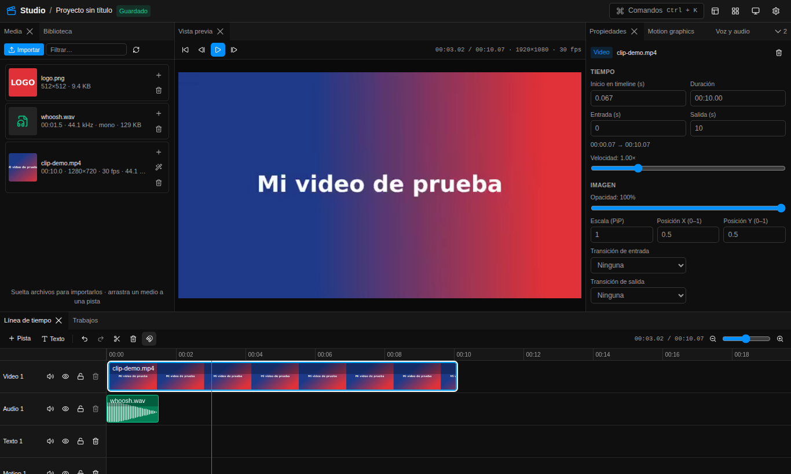
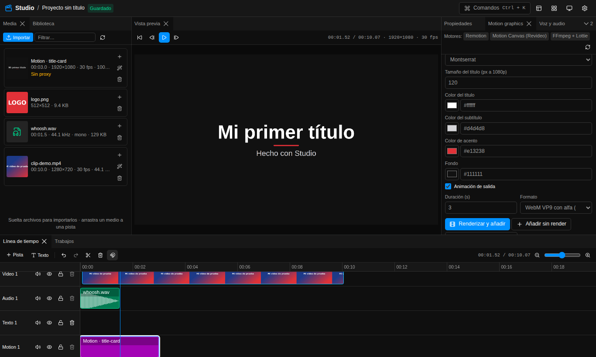
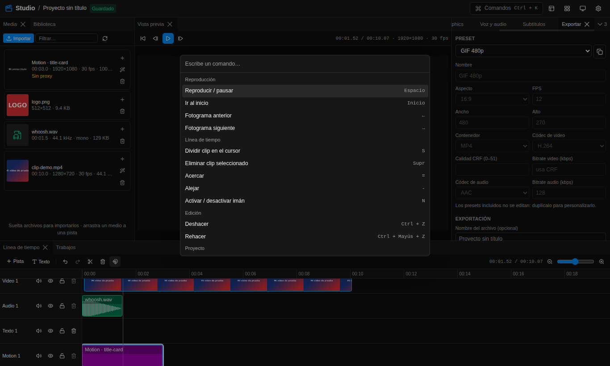
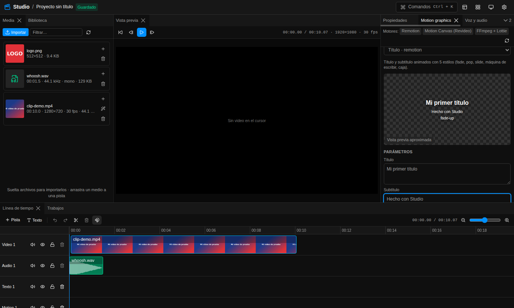
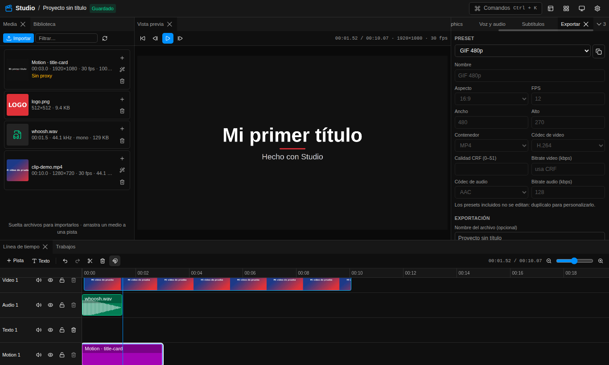
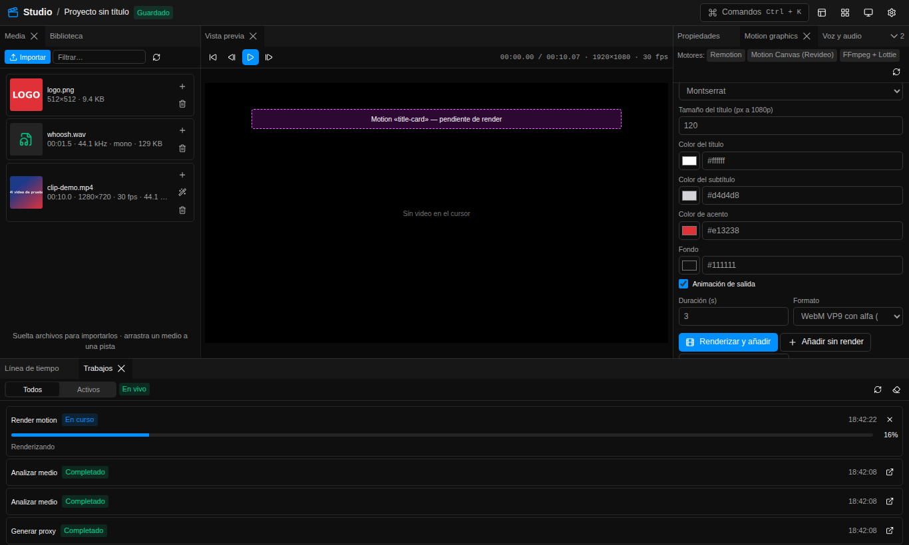

Manual de usuario — Studio
Versión 0.1.0 · Escrito para personas que no programan. Todo lo que aparece acá fue verificado contra el código del proyecto. Cuando algo no está limitado por el programa, se indica como "sin límite impuesto; recomendado …" con el motivo.
1. Qué es y para qué sirve
Studio es un editor de video que se usa desde el navegador pero corre
entero en tu PC (Windows 10/11). No necesita cuenta ni nube: el navegador
habla con tres programas locales que se abren con start.ps1.
Con Studio podés:
- Editar video: importar archivos, ponerlos en una línea de tiempo con pistas de video, audio, texto y motion; cortar, recortar, cambiar velocidad y volumen, poner transiciones y un video dentro de otro (PiP).
- Hacer motion graphics con 9 plantillas animadas (títulos, rótulos, subtítulos animados, pantalla final, etc.), con fondo transparente para superponerlas al video.
- Trabajar la voz: generar locuciones con voces en español (texto a voz, Piper), aplicar efectos (robot, teléfono, eco, voz grave…), limpiar y normalizar el volumen, y cambiar una voz por otra con modelos RVC.
- Generar subtítulos automáticos con Whisper, editarlos y quemarlos en el video.
- Agregar efectos de sonido y música desde una biblioteca local (con packs CC0 de Kenney y tus propios archivos; Freesound opcional).
- Exportar con presets listos: YouTube 1080p y 4K, Reels/TikTok, Shorts, GIF y WebM con transparencia, o crear los tuyos.
Cómo está armado (solo para entender los mensajes):
| Pieza | Dirección | Qué hace |
|---|---|---|
| web | http://localhost:3000 |
El dashboard que ves en el navegador. |
| api | http://127.0.0.1:3001 |
Guarda proyectos y archivos, maneja la cola de trabajos, FFmpeg. |
| workers | http://127.0.0.1:8001 |
Inteligencia artificial local: Whisper, Piper y RVC. |
Todo escucha solo en 127.0.0.1 (tu propia PC): nadie de tu red puede entrar.
2. Requisitos
| Requisito | Mínimo | Recomendado |
|---|---|---|
| Sistema | Windows 10 (21H2 o superior) u 11, 64 bits | Windows 11 |
| Memoria (RAM) | 8 GB | 16 GB |
| Disco libre | 10 GB para la instalación | 20 GB (+4 GB si instalás CUDA) + espacio para tus proyectos (ver §7) |
| GPU | No hace falta: todo funciona en CPU | NVIDIA con driver 570 o superior (acelera Whisper y RVC) |
| Navegador | Microsoft Edge o Google Chrome | Chrome/Edge actualizados |
| Internet | Solo para instalar y para descargar modelos | — |
Notas:
-
Internet: se usa durante
setup.ps1(programas, dependencias, voz Piper, modelo Whisper, activos de RVC, navegador de Remotion) y cuando pedís algo que no está descargado (por ejemplo, un modelo Whisper distinto o una voz nueva). Las API de ElevenLabs, OpenAI y Freesound son opcionales y solo se usan si ponés su clave. -
GPU: el codificador de video por hardware (NVIDIA NVENC, Intel
QuickSync o AMD AMF) se detecta solo para exportar H.264; si falla, Studio vuelve al
codificador por CPU (
libx264). - Navegador: usá Chrome o Edge. Chromium "pelado" no reproduce H.264 en la vista previa.
3. Instalación y arranque
La guía completa, con la solución de los errores típicos de instalación, está en Instalación en Windows. Resumen:
-
Descargá el proyecto (ZIP o
git clone) a una ruta corta, por ejemploC:\dev\studio. Si bajaste el ZIP, desbloqueá los scripts:Get-ChildItem -Recurse C:\dev\studio\scripts | Unblock-File -
Abrí Windows PowerShell (no hace falta como administrador) y entrá a la carpeta:
cd C:\dev\studio -
Instalá todo (15–40 minutos según tu conexión; aceptá los avisos de Control de cuentas):
powershell -NoProfile -ExecutionPolicy Bypass -File scripts\windows\setup.ps1Con GPU NVIDIA agregá
-WithCuda(también acepta-Cuda). Al final verás una tabla con ✅/❌. -
Arrancá Studio (o doble clic en
scripts\windows\start.cmd):powershell -NoProfile -ExecutionPolicy Bypass -File scripts\windows\start.ps1Se abren tres ventanas (workers, api, web) y el navegador en http://localhost:3000.
-
Para cerrar: cerrá esas ventanas o ejecutá
scripts\windows\stop.ps1.
Opciones de los scripts (verificadas en scripts/windows/*.ps1):
| Script | Opción | Para qué |
|---|---|---|
setup.ps1 |
-WithCuda (alias -Cuda) |
Instala PyTorch con CUDA 12.8 y pone USE_CUDA=true en
.env.
|
setup.ps1 |
-WhisperModel small |
Descarga otro modelo de subtítulos (por defecto base). |
setup.ps1 |
-PiperVoice es_MX-claude-high |
Descarga otra voz (por defecto la de PIPER_DEFAULT_VOICE). |
setup.ps1 |
-SkipRvc |
Instalación liviana sin PyTorch/RVC (RVC queda deshabilitado). |
setup.ps1 |
-SkipModels, -SkipBrowser, -SkipBuild
|
Saltea descargas de modelos, el navegador de Remotion o la compilación. |
setup.ps1 |
-SkipWinget |
No instala nada con winget (Git, Node 22, Python 3.11 y FFmpeg ya en PATH). |
start.ps1 |
-SingleConsole |
Todo en una sola consola con prefijos [workers], [api],
[web]; Ctrl+C detiene todo.
|
start.ps1 |
-NoBrowser |
No abre el navegador. |
start.ps1 |
-TimeoutSec 300 |
Espera más por cada servicio (por defecto 180 s). |
start.ps1 |
-Dev |
Modo desarrollo (recarga en caliente). No hace falta para usar Studio. |
doctor.ps1 |
— | Diagnóstico de versiones, FFmpeg, GPU, modelos, puertos y servicios. No cambia nada. |
stop.ps1 |
— | Detiene lo que levantó start.ps1. |
import-cc0.ps1 (en scripts\library) |
-ZipDir, -Packs, -Force,
-NoScan
|
Descarga packs de sonidos CC0 de Kenney a la biblioteca. |
4. Recorrido por el dashboard

La pantalla tiene un encabezado arriba y debajo los paneles, que podés mover, agrupar en pestañas, redimensionar y ocultar.
4.1 Encabezado
De izquierda a derecha:
- Studio / nombre del proyecto y un indicador de guardado: Cambios sin guardar, Guardando…, Guardado, Guardado local (la API no responde: se guardó solo en este navegador) o Error al guardar.
- Indicador de IA (chip con ícono de placa o de procesador): dice si la IA local corre en GPU o en CPU, cuánta memoria de video (VRAM) queda libre y qué modelo está cargado. Se actualiza cada 10 s; al pasar el mouse muestra el detalle y al hacer clic ofrece Liberar GPU (ver §17.2).
- Comandos (
Ctrl+K): abre la paleta de comandos. - Paneles (ícono de paneles): mostrar u ocultar cada panel.
- Layouts (ícono de cuadrícula): Restaurar layout, Guardar layout actual…, tus layouts guardados y Gestionar layouts….
- Tema (sol / luna / monitor): Claro, Oscuro o Sistema.
- Ajustes (engranaje): pestañas Apariencia, Atajos, Layouts y Paquetes de IA.
- 🐞 Reportar error: abre el formulario de reporte (ver §13).
4.2 Los 10 paneles
| Panel | Para qué sirve |
|---|---|
| Media | Importar archivos (botón Importar o arrastrar y soltar), ver miniatura y datos (duración, resolución, fps, tamaño), + para agregar a la línea de tiempo, varita para Generar proxy, tacho para borrar (si el medio está en uso ofrece Quitar del timeline y borrar), filtro por nombre. Los renders de motion llevan la etiqueta Render (no necesitan proxy). |
| Biblioteca | Buscar efectos de sonido y música (Efectos, Música, Ambiente), escucharlos, + para agregarlos a la línea de tiempo, Re-escanear la carpeta de la biblioteca y subir sonidos propios. |
| Vista previa | Reproductor sincronizado con el cursor: ir al inicio, fotograma anterior/siguiente, reproducir/pausar. Dibuja todas las capas bajo el cursor como la exportación (videos, imágenes, textos, motion con transparencia, recortes de fondo, PiP, subtítulos y keyframes) y suena el audio. Herramientas Máscara, Quitar fondo, Seguir objeto y Reencuadrar; engranaje con guías de zona segura, calidad y Vista previa clásica (ver §18). |
| Línea de tiempo | Pistas y clips. Barra: Pista (agregar pista de video, audio, texto o motion), Texto (clip de texto en el cursor), deshacer/rehacer, tijera (dividir en el cursor), tacho, onda (Quitar silencios y muletillas), menú Escenas (Detectar escenas, Cortar en escenas, Mostrar marcadores de escena), imán, tiempo actual / total y zoom. |
| Propiedades | Sin clip seleccionado: nombre y tamaño del proyecto (ancho, alto, FPS y botones 16:9 1080p, 9:16 vertical, 1:1) y datos del medio seleccionado. Con un clip: tiempo (inicio, entrada, salida, velocidad), imagen (opacidad, escala y posición X/Y en % con anclas arriba/centro/abajo y esquinas —también para motion graphics—, transiciones), audio (volumen, efectos guardados), texto (fuente, tamaño, color, posición). |
| Motion graphics | Elegir plantilla, editar parámetros, duración y formato; Renderizar y añadir, Añadir sin render o Actualizar clip y renderizar. Arriba se ve qué motores están disponibles (en verde); las plantillas de un motor no disponible no se pueden elegir. |
| Voz y audio | Tres pestañas: Texto a voz, Efectos (arriba, Limpiar voz (IA)) y RVC. |
| Subtítulos | Transcribir (Whisper) el clip seleccionado (idioma y modelo), Quitar silencios y muletillas… (con revisión) o Corte rápido, editar segmentos, Descargar SRT, elegir estilo y Renderizar subtítulos como motion. |
| Exportar | Elegir preset (arranca en YouTube 1080p), duplicarlo y editarlo (incluida la casilla Transparencia), Revisión para redes (casilla Voy a subirlo a redes, avisos y etiqueta de IA), nombre del archivo, exportar un rango, Quemar subtítulos en el video y la lista de Exportaciones recientes con Descargar. |
| Trabajos | Todo lo que tarda (análisis, proxies, renders, voz, transcripción, exportación) con su progreso. Permite cancelar, abrir el resultado, filtrar Todos/Activos, limpiar terminados y, en los que fallan, Reportar. Arriba indica la conexión: En vivo, Consulta periódica o Sin conexión. |
Cómo se trabaja en la línea de tiempo:
- Mover un clip: arrastralo (puede pasar a otra pista del mismo tipo). En pistas de video, audio y motion los clips no se superponen: si lo soltás encima de otro, se pega al final (o al principio) del vecino. Si agregás un clip (o un motion renderizado) en un tramo ocupado, va a otra pista libre o se crea una nueva (Motion 2, Video 2…), encima de la anterior.
- Recortar: arrastrá los bordes del clip (se frenan en el clip vecino).
- Dividir: poné el cursor y tocá
S(o la tijera). -
Zoom:
Ctrl+ rueda del mouse, el control deslizante o las teclas=y-. -
Imán (
N): pega los clips al 0, al cursor, a los bordes de otros clips y a los marcadores de escena (si están visibles). - Escenas: con un clip de video seleccionado, Escenas → Detectar escenas marca cada cambio de plano en la regla (rombos naranjas y una línea punteada); Cortar en escenas lo divide en esos puntos (ver §17.5).
- Cada pista tiene botones para silenciar, ocultar, bloquear y eliminar (solo se elimina si está vacía).
- Orden de las capas: las pistas se apilan en el orden de la lista; la pista de más arriba queda al fondo de la imagen y las que agregás después quedan encima. (No hay forma de reordenar pistas desde la interfaz.)
- Hasta 100 pasos de deshacer/rehacer.

4.3 Personalizar
- Mover paneles: arrastrá la pestaña del panel a otro lugar (al centro de otro grupo para sumarlo como pestaña, o a un borde para dividir). Los bordes entre paneles se arrastran para cambiar el tamaño.
- Ocultar / mostrar: menú Paneles del encabezado o, en la paleta, Mostrar panel: … / Ocultar panel: ….
-
Layouts guardados: menú
Layouts → Guardar layout actual… y escribí un nombre. Los ves en el
mismo menú y en Ajustes → Layouts (Aplicar, eliminar).
Restaurar layout (
Ctrl+Shift+R) vuelve a la distribución original. - Apariencia (Ajustes → Apariencia): tema Claro/Oscuro/Sistema, color de acento (muestras o Personalizado) y densidad Compacta/Cómoda/Amplia.
-
Atajos (Ajustes → Atajos): hacé clic en un atajo y apretá la nueva
combinación;
Esccancela yRetrocesolo deja vacío. Si dos acciones usan la misma tecla aparece el aviso Hay atajos repetidos. Restablecer vuelve a los de fábrica. -
Paleta de comandos (
Ctrl+Ko botón Comandos): escribí parte del nombre y Enter. Incluye todas las acciones con atajo, mostrar/ocultar/ir a cada panel, aplicar layouts, cambiar tema, abrir ajustes, agregar pistas, Añadir clip de texto en el cursor, Nuevo proyecto y Reportar error (diagnóstico para Claude) (ver §13).
Dónde se guarda: los ajustes y el layout se guardan en el navegador y en la API local (gana la copia más nueva), así sobreviven a borrar el historial del navegador.

4.4 Guardado del proyecto
-
Studio trabaja con un proyecto abierto a la vez. Cada cambio se guarda
solo (a los 1,5 s) en el navegador y en la API.
Ctrl+Sfuerza el guardado. - Nuevo proyecto (paleta) reemplaza el proyecto abierto por uno vacío de 1920×1080 a 30 fps con cuatro pistas (video, audio, texto, motion). No hay una lista para volver a abrir proyectos anteriores desde la interfaz: exportá antes de empezar otro.
5. Flujos paso a paso
Flujo 1 — Cortar y exportar un clip
- En Media, tocá Importar (o arrastrá el archivo al panel). Esperá en Trabajos a que terminen Analizar medio y Generar proxy.
- Tocá + en el medio (o arrastralo a la pista de video). El clip arranca en el cursor.
-
Llevá el cursor al punto de corte (clic en la regla o
←/→fotograma a fotograma) y tocáS. -
Seleccioná la parte que no querés y apretá
Supr. Repetí para el final. -
Si quedó un hueco al principio, seleccioná el clip y en
Propiedades → Tiempo poné Inicio en timeline (s) en
0. Para recortes exactos usá Entrada (s) y Salida (s). -
Abrí Exportar (
Ctrl+E), elegí YouTube 1080p (16:9), escribí un nombre (opcional) y tocá Exportar. -
Cuando el trabajo diga Completado, tocá Descargar en
Exportaciones recientes. El archivo también queda en
storage\exports\<nombre>-<fecha>.mp4.
Tip: para exportar solo un tramo sin cortar, marcá Exportar solo un rango y completá Desde (s) / Hasta (s).
Flujo 2 — Video vertical para Reels/TikTok con subtítulos animados
Decidí primero el lienzo (Propiedades, sin clip seleccionado):
- Video grabado vertical: tocá 9:16 vertical (1080×1920) o Ajustar lienzo al video, que copia la forma del primer video del timeline (un video de WhatsApp de 478×850 da un lienzo de 1080×1920). Si soltás un video vertical en un proyecto 16:9, Studio te lo ofrece con un aviso Ajustar lienzo.
- Video horizontal: dejá el proyecto en 16:9. Al exportar con el preset vertical, Studio pone el cuadro completo centrado con un fondo desenfocado arriba y abajo. (Si en cambio ponés el proyecto en 9:16 con un video horizontal, el video queda con barras negras: no hay recorte ni zoom en la interfaz.)
Pasos:
- Importá el video y agregalo a la pista de video (como en el flujo 1).
-
Seleccioná el clip. En Subtítulos → Transcribir (Whisper) elegí
Idioma (Español) y Modelo (Por defecto usa
WHISPER_MODELde.env) y tocá Transcribir clip. - Cuando termine, los segmentos aparecen en la lista. Corregí el texto que haga falta (al editar un segmento se pierden los tiempos por palabra de ese segmento) y ajustá Estilo de subtítulos: los presets Clásico, Reels (palabra a palabra), Karaoke, Minimal y Titular arriba, más tamaño, posición, colores, animación y mayúsculas.
- Subtítulos simples (quemados): con eso alcanza. Al exportar, con la casilla Quemar subtítulos en el video marcada, los segmentos se queman con FFmpeg usando la fuente, tamaño, color, posición (Arriba, Centro, Abajo) y mayúsculas del estilo (sin animación). Los subtítulos se ajustan al rectángulo del video: con un video vertical dentro de un lienzo 16:9 el texto se corta en líneas dentro del video y no se sale por los costados. La vista previa los muestra igual que la exportación.
-
Subtítulos animados (palabra a palabra): tocá
Renderizar subtítulos como motion. Se crea un clip en la pista
Motion con la plantilla Subtítulos animados que empieza donde
empieza el primer segmento, y se renderiza con fondo transparente (mirá
Trabajos). Para cambiar el estilo de la animación
(
highlight,karaoke,pop,box), seleccioná ese clip, tocá Editar el clip motion seleccionado en Motion graphics y Actualizar clip y renderizar. Los subtítulos animados también se acomodan dentro del video (tamaño y ancho según el video, no según el lienzo). Cuando hay un clip de subtítulos animados, la casilla Quemar subtítulos en el video del panel Exportar arranca desmarcada; y aunque la marques, los tramos que ya muestran los animados no se queman de nuevo (ni en la vista previa ni en la exportación), así no salen dos veces. Quitar silencios y muletillas: con el clip seleccionado, en Subtítulos → Quitar silencios y muletillas… analizá el clip, revisá la lista de cortes (podés escuchar cada uno) y tocá Aplicar (detalle en §17.4). El resto del clip y los subtítulos se corren para cerrar los huecos. Si ya habías renderizado los subtítulos animados, volvé a renderizarlos. Sin la IA, Corte rápido quita las pausas entre palabras de la transcripción (pausa mínima de 600 ms por defecto) sin revisión. - Exportá con Reels / TikTok (9:16) (1080×1920, 30 fps) o YouTube Shorts (9:16) (1080×1920, 60 fps).
Flujo 3 — Locución con TTS + música con ducking
Generar la voz
- Llevá el cursor a donde querés que empiece la voz.
- Voz y audio → Texto a voz: Proveedor Piper (local), elegí la Voz, escribí el Texto (hasta 20 000 caracteres), ajustá Velocidad (0,5× a 2×) y tocá Generar y añadir al cursor. El audio aparece en una pista de audio.
- Opcional: seleccioná el clip y en Efectos usá el preset Voz limpia (reducción de ruido + normalización a −16 LUFS) → Aplicar (crea un nuevo audio).
Agregar la música
- Importá la música en Media (o buscala en Biblioteca con el filtro Música) y agregala. Queda en otra pista de audio.
Bajar la música bajo la voz — dos opciones
-
Opción A, desde el dashboard (sin ducking automático): seleccioná el
clip de música y en Propiedades → Audio bajá el Volumen (por
ejemplo al 20–30 %). Si querés que suba en las pausas, dividí la música (
S) y poné volúmenes distintos a cada parte. -
Opción B, ducking automático (avanzado): el efecto
ducking existe en el motor de audio pero
no tiene botón en el dashboard (ver
§15). Se pide a la API desde PowerShell y
genera un único audio con la voz + la música que baja sola cuando hay voz:
-
Averiguá los identificadores: clic en el medio de la voz en Media (sin clip seleccionado en la línea de tiempo) y mirá en Propiedades → Medio seleccionado la ruta
media/<ID>.<ext>; hacé lo mismo con la música. -
En PowerShell:
$body = @{ assetId = "ID_DE_LA_VOZ" format = "wav" effects = @(@{ type = "ducking"; musicAssetId = "ID_DE_LA_MUSICA"; threshold = 0.05; ratio = 8; attackMs = 20; releaseMs = 400; musicVolume = 1 }) } | ConvertTo-Json -Depth 5 Invoke-RestMethod -Method Post -Uri http://127.0.0.1:3001/api/voice/effects ` -ContentType 'application/json' -Body $body -
Aparece un trabajo Efecto de voz. Al terminar, en Media (botón recargar) hay un audio nuevo llamado
<nombre de la voz> (efecto). Reemplazá los dos clips por ese.
-
threshold(0,000977–1): desde qué nivel de voz baja la música.ratio(1–20): cuánto baja.attackMs/releaseMs: qué tan rápido baja y vuelve.musicVolume(0–4): volumen base de la música. El audio resultante dura lo que el más largo de los dos.
-
Flujo 4 — Cambiar la voz con RVC
-
Conseguí un modelo RVC ya entrenado (Studio no entrena modelos) y
copialo en
models\rvc\<nombre>\(ver §9.3). Recargá la página. - Seleccioná en la línea de tiempo el clip con la voz original.
- Voz y audio → RVC: elegí Modelo, Cambio de tono (−24 a +24 semitonos; +12 suele usarse para pasar de voz masculina a femenina y −12 al revés), Índice de rasgos (0 a 1, por defecto 0,75), Método F0 (rmvpe recomendado, pm más rápido, harvest, crepe) y, si está habilitado, Usar GPU (CUDA).
- Tocá Convertir voz. En CPU tarda (ver §7). Al terminar, el clip pasa a usar el audio convertido.
Usá solo voces propias o con permiso explícito de la persona.
Flujo 5 — Título, lower-third y pantalla final con Remotion
- Llevá el cursor a donde va el gráfico.
-
Motion graphics → Plantilla: elegí Título,
Rótulo (lower third) o Pantalla final (CTA) (todas del
motor
remotion). -
Editá los Parámetros (textos, estilo, tipografía, colores). El
Título ya viene con Fondo
transparent; en otras plantillas, para que se superpongan al video, escribítransparenten el campo de texto de Fondo (el selector de color solo elige colores). - Formato: WebM VP9 con alfa (overlay) para usarlo dentro de Studio. Duración (s): por defecto 3 s (título), 5 s (rótulo) y 8 s (pantalla final).
- Tocá Renderizar y añadir: se crea el clip en la pista Motion y se renderiza (mirá Trabajos → Render motion). La vista del panel es aproximada; cuando termina aparece el video del último render.
- Para cambiarlo: seleccioná el clip, tocá Editar el clip motion seleccionado, cambiá los parámetros y Actualizar clip y renderizar.
Si un clip motion dice Sin renderizar en Propiedades, la exportación se niega a empezar y te dice qué clip falta renderizar.

Flujo 6 — Agregar efectos de sonido desde la biblioteca
-
Una vez: cargá sonidos. Opciones:
-
Packs CC0 de Kenney:
powershell -NoProfile -ExecutionPolicy Bypass -File scripts\library\import-cc0.ps1 -
Copiá tus archivos a
storage\library\sfx\,music\oambience\(las subcarpetas se vuelven etiquetas) y tocá Re-escanear en Biblioteca. - O usá el botón de subir de Biblioteca (los archivos subidos entran como Efectos con licencia "unknown").
-
Packs CC0 de Kenney:
-
En Biblioteca, escribí en Buscar sonidos y música… (por
ejemplo
click,puerta), filtrá por tipo y proveedor (Local o Freesound si configuraste la clave). - Tocá ▶ para escuchar y + para agregarlo a la línea de tiempo.
- Movelo al momento justo y ajustá su volumen en Propiedades → Audio.
La licencia y la atribución de cada sonido se ven en la lista. Si la licencia pide atribución (por ejemplo CC-BY), poné el crédito en la descripción de tu video.
Flujo 7 — Exportar en varios formatos
- Abrí Exportar (arranca en YouTube 1080p (16:9)) y elegí un preset de la tabla de §6.2.
-
Para un formato propio: elegí uno parecido, tocá Duplicar preset y
cambiá Nombre, Aspecto, Ancho, Alto, FPS,
Contenedor, Códec de video, Calidad CRF (0–51) o
Bitrate video (kbps) (si lo completás, se ignora el CRF),
Códec de audio, Bitrate audio (kbps) y
Transparencia (canal alfa: WebM VP9 o ProRes 4444). Tocá
Guardar preset.
- Los presets incluidos no se editan ni se borran: duplicalos.
- Combinaciones que funcionan: MP4 + H.264 o H.265 + AAC, WebM + VP9 (el audio pasa siempre a Opus), MOV + ProRes + AAC o PCM.
- Ejemplos útiles: Instagram 4:5 (1080×1350), cuadrado 1:1 (1080×1080), H.265 para archivos más chicos, ProRes para llevar a otro editor.
-
Exportá una vez por preset. Cada exportación es un trabajo nuevo y un archivo nuevo en
storage\exports\. - Con transparencia: el preset WebM con transparencia (VP9) (o uno tuyo con la casilla Transparencia y códec VP9 o ProRes) deja transparente lo que no tiene imagen (útil para exportar solo gráficos). Si hay un video ocupando todo el cuadro, no va a quedar nada transparente.
- GIF 480p: 480×270 a 12 fps, sin audio, en bucle.

6. Formatos soportados
6.1 Entrada (lo que podés importar en Media)
El tipo se decide por la extensión del archivo
(apps/api/src/services/media-files.ts).
| Tipo | Extensiones aceptadas | Qué hace Studio |
|---|---|---|
| Video | mp4, mov, mkv, webm, avi, m4v, mts, m2ts, ts, wmv, flv, mpg, mpeg, 3gp, gif | Analiza (duración, resolución, fps, audio), miniatura, tira de miniaturas, forma de onda y proxy 360p automático. |
| Audio | mp3, wav, m4a, aac, flac, ogg, opus, wma, aif, aiff | Analiza y calcula la forma de onda. |
| Imagen | png, jpg, jpeg, webp, bmp, tif, tiff | Se usa como clip de video fijo (dura lo que estires el clip). |
| Subtítulos | srt, ass, vtt | Se guardan en Media, pero hoy no se cargan en el panel Subtítulos ni se queman (ver §15). |
| Lottie | json, lottie | Se guardan en Media. Para animarlos usá la plantilla Animación Lottie con la URL del archivo (ver §8). |
| Biblioteca de sonidos | wav, mp3, ogg, oga, opus, flac, m4a, aac | Se indexan con búsqueda, etiquetas, licencia y forma de onda. |
| Modelos RVC |
.pth (obligatorio) + .index (opcional) en
models\rvc\<nombre>\
|
Aparecen en Voz y audio → RVC. |
| Voces Piper |
<voz>.onnx + <voz>.onnx.json en
models\piper\
|
Aparecen en Texto a voz. |
Si el archivo no tiene extensión reconocida pero el navegador informa un tipo
video/*, audio/* o image/*, también se acepta.
Cualquier otro tipo da Tipo de archivo no soportado.
6.2 Salida: presets de exportación
| Preset | Contenedor | Video | Resolución | FPS | Calidad | Audio | Alfa |
|---|---|---|---|---|---|---|---|
| YouTube 1080p (16:9) | MP4 | H.264 | 1920×1080 | 30 | CRF 20 | AAC 192 kbps | No |
| YouTube 4K (16:9) | MP4 | H.264 | 3840×2160 | 30 | CRF 18 | AAC 192 kbps | No |
| Reels / TikTok (9:16) | MP4 | H.264 | 1080×1920 | 30 | CRF 21 | AAC 160 kbps | No |
| YouTube Shorts (9:16) | MP4 | H.264 | 1080×1920 | 60 | CRF 20 | AAC 192 kbps | No |
| GIF 480p | GIF | GIF (paleta) | 480×270 | 12 | — | sin audio | No |
| WebM con transparencia (VP9) | WebM | VP9 (yuva420p) |
1920×1080 | 30 | CRF 30 | Opus 160 kbps | Sí |
Detalles:
- Audio siempre a 48 kHz. MP4 y MOV salen con faststart (empiezan a reproducirse antes de descargarse del todo).
-
H.264 usa el codificador por hardware si existe (NVENC, QuickSync o
AMF) o
libx264(preset medium, perfil high). H.265 usalibx265(CPU). VP9 usalibvpx-vp9. ProRes usaprores_ks(perfil HQ; 4444 con alfa). - Si el aspecto del proyecto y del preset difieren, el cuadro entra completo con fondo desenfocado (o con bordes transparentes si el preset tiene alfa).
- Subtítulos: se queman si está marcada Quemar subtítulos en el video (por defecto sí, salvo que haya un clip de Subtítulos animados).
-
Nombre del archivo:
storage\exports\<nombre-o-proyecto>-<AAAAMMDD-HHMMSS>.<ext>.
6.3 Salida de motion graphics
| Formato (panel Motion) | Archivo | Alfa | Uso |
|---|---|---|---|
| MP4 H.264 (sin alfa) | .mp4 |
No | Gráfico con fondo propio. |
| WebM VP9 con alfa (overlay) | .webm |
Sí | Recomendado para usar en Studio. |
| ProRes 4444 con alfa | .mov |
Sí | Llevar a otro editor (Premiere, Resolve, Final Cut). |
| Secuencia PNG | carpeta de .png |
Sí | Otros programas de composición. |
Se guardan en storage\renders\<id-del-trabajo>.<ext>.
6.4 Salida de voz y subtítulos
| Función | Archivo |
|---|---|
| Texto a voz | WAV en storage\renders\ (nuevo medio de audio). |
| Efectos de voz | WAV 48 kHz (la API también acepta MP3 y M4A). |
| RVC | Audio nuevo en storage\renders\. |
| Transcripción |
JSON + SRT + ASS (karaoke) en storage\renders\; botón
Descargar SRT en el panel.
|
7. Límites y recomendaciones
Impuestos por el programa (si los superás, Studio muestra un error):
| Qué | Límite |
|---|---|
| Tamaño de cada archivo importado | 20 GB (error El archivo supera el límite). |
| Proyecto guardado (JSON) | 10 MB por pedido a la API (un proyecto normal pesa unos KB). |
| Texto a voz | 20 000 caracteres por pedido; velocidad 0,5× a 2×. |
| Velocidad de un clip | 0,1× a 4× en Propiedades. |
| Volumen de un clip | 0 % a 400 %. |
| Transiciones | 0,05 a 10 s. |
| Escala PiP / posición | Escala 0,05 a 1; posición X/Y 0 a 1. |
| Motion graphics (Remotion) | Hasta 1800 s (30 min) y 120 fps por render. |
| Motion graphics (FFmpeg) | Hasta 600 s y 60 fps. |
| RVC | Tono −24 a +24 semitonos; índice 0 a 1. |
| Deshacer | 100 pasos. |
| Trabajos simultáneos |
FFmpeg 2 (1–8), motion 1 (1–4), IA 1 (1–4); se cambian en .env.
|
| Trabajo interrumpido por un reinicio | Se reintenta solo hasta 2 intentos; después queda Falló. |
Sin límite impuesto (recomendaciones y por qué):
| Qué | Recomendado | Por qué |
|---|---|---|
| Duración del video | Sin límite impuesto; recomendado ≤ 30 min por proyecto | La exportación arma un único proceso FFmpeg con todo el proyecto: proyectos largos tardan mucho y si falla hay que empezar de nuevo. |
| Resolución | Sin límite impuesto; recomendado ≤ 4K (3840×2160) | Es la mayor resolución de los presets incluidos; más allá FFmpeg usa mucha memoria. |
| Cantidad de pistas | Sin límite impuesto; recomendado ≤ 6 pistas de video/motion | Cada pista visual se superpone en el mismo proceso de exportación: más pistas = más RAM y más tiempo. |
| Cantidad de clips | Sin límite impuesto; recomendado ≤ 200 | El proyecto se guarda completo cada 1,5 s y el historial de deshacer guarda copias. |
| Archivos de la Biblioteca | Sin límite impuesto (20 GB); recomendado ≤ 100 MB por archivo | Las subidas a la Biblioteca se cargan enteras en memoria antes de guardarse. |
| Motion graphics | Recomendado ≤ 60 s por render | El render en CPU con navegador es lento; para piezas largas conviene dividir. |
| RVC | Recomendado clips ≤ 1 min en CPU | En CPU tarda del orden de la duración del audio o más. |
| Texto a voz | Recomendado ≤ 1000 caracteres por bloque | Un error a mitad de un texto largo obliga a repetir todo; en bloques es más fácil corregir. |
| Espacio en disco por proyecto | Recomendado: 3 veces el tamaño de tus originales libre | Studio guarda el original, un proxy, renders intermedios y cada exportación (no se borran solos). |
Tiempos esperados en CPU (orientativos; no medidos en este proyecto: medilos con las recetas de §14):
| Tarea | Referencia |
|---|---|
Whisper small (int8) |
13 min de audio en ≈ 1 min 42 s en un i7-12700K (benchmark publicado de
faster-whisper). base es más rápido; medium ≈ 3 veces
más lento que small; large-v3 en CPU es poco práctico
para videos largos.
|
| Texto a voz (Piper) | Más rápido que tiempo real (según la documentación de Piper). |
| RVC |
Del orden de la duración del audio o más; con -WithCuda es varias
veces más rápido.
|
| Remotion |
Sin dato medido. Usa por defecto la mitad de los hilos de tu CPU
(REMOTION_CONCURRENCY).
|
| Exportación | Depende de la duración, la resolución y si hay codificador por hardware. H.265, VP9 y 4K son los más lentos. |
Espacio en disco:
- Instalación: 10 GB mínimo, 20 GB recomendado, +4 GB con CUDA (PyTorch CUDA ≈ 3 GB).
-
Modelos: se guardan en
models\(Whisper, Piper, RVC). Cada modelo Whisper extra ocupa más espacio cuanto más grande es. -
Tus datos:
storage\media(originales),storage\proxies(proxies y miniaturas),storage\renders(voz, motion, transcripciones),storage\exports(exportaciones). Podés borrarstorage\tmpcon Studio cerrado. Borrar un medio desde Media borra también su proxy y miniaturas, pero no los renders ni las exportaciones.
8. Motion graphics: catálogo de plantillas
Todas las plantillas Remotion admiten fondo transparent salvo
Transición entre clips. Las tipografías disponibles son: Inter,
Montserrat, Poppins, Roboto, Oswald, Playfair Display, Bebas Neue, Anton, Archivo Black y
Bangers (con REMOTION_FONTS=system, el valor por defecto, se usan las fuentes
instaladas en Windows y no se descarga nada). Los colores aceptan #rrggbb,
rgba(...), nombres CSS y transparent.
| # | Plantilla (id) | Duración por defecto | Para qué |
|---|---|---|---|
| 1 | Título (title-card) |
3 s | Título + subtítulo con 5 estilos de animación. |
| 2 | Rótulo (lower third) (lower-third) |
5 s | Nombre y cargo con entrada y salida configurables. |
| 3 | Subtítulos animados (animated-captions) |
5 s | Subtítulos palabra a palabra estilo TikTok/CapCut. |
| 4 | Transición entre clips (transition) |
4 s | Une dos medios con fundido, deslizamiento, barrido o giro. Sin alfa. |
| 5 | Visualizador de audio (audio-visualizer) |
10 s | Barras u onda que reaccionan a un audio, con título. |
| 6 | Animación Lottie (lottie-overlay) |
3 s | Superpone una animación Lottie con fondo transparente. |
| 7 | Pantalla final (CTA) (end-screen) |
8 s | Cierre con llamada a la acción, usuario y recuadros de videos sugeridos. |
| 8 | Barra de progreso (progress-bar) |
10 s | Barra del avance del video, con capítulos opcionales. |
| 9 | Tipografía cinética (kinetic-typography) |
4 s | Texto que entra palabra por palabra con animaciones de impacto. |
Parámetros (nombre en el panel → valores; negrita = por defecto):
- Título: Título (Mi título), Subtítulo, Estilo (fade-up, pop, slide, typewriter, boxed), Alineación (center, left), Tipografía (Montserrat), Tamaño del título (16–400, 120), Color del título, Color del subtítulo, Color de acento, Fondo (transparent), Animación de salida (sí).
- Rótulo: Nombre, Cargo / descripción, Estilo (bar, box, underline, split), Posición (bottom-left, bottom-center, bottom-right, top-left, top-right), Animación de entrada (slide, fade, wipe, pop), Animación de salida (slide, fade, wipe, pop, none), Duración entrada (0,1–3 s, 0,6), Duración salida (0,1–3 s, 0,5), Tipografía (Inter), Escala (0,3–3, 1), Margen (0–30 %, 6), colores de acento, nombre, cargo y caja.
-
Subtítulos animados: Transcripción (JSON con
segmentsywords; trae un ejemplo), Captions (formato Remotion, opcional), Estilo (highlight, karaoke, pop, box), Posición (bottom, center, top), Tipografía (Montserrat), Grosor (400, 700, 900), Tamaño (16–300, 88), Mayúsculas (sí), colores de texto, resaltado, caja y borde, Grosor del borde (0–40, 10), Agrupar palabras dentro de (0–5000 ms, 900), Zona segura (%) (si no la ponés, se calcula sola según 9:16 o 16:9), Video de fondo (URL), Fondo (transparent). - Transición: Transición (fade, slide, wipe, flip), Dirección (from-right, from-left, from-top, from-bottom), Duración de la transición (0,1–5 s, 0,8), Curva (linear, spring), Clip A y Clip B (URL de video o imagen), Ajuste (cover, contain), colores y etiquetas para cuando no hay medio.
- Visualizador de audio: Audio (URL de mp3/wav), Estilo (bars, wave, mirror-bars), Cantidad de barras (8–128, 48), colores principal y secundario, Fondo (#0b1020), Título (Escucha esto), Subtítulo, Tipografía (Poppins), Sensibilidad (0,2–5, 1,5).
-
Animación Lottie: Animación Lottie (URL del
.json; si no ponés nada usa una animación de ejemplo), Repetir (sí), Velocidad (0,1–4, 1), Tamaño (0,05–1 del lado menor, 0,5), Posición (center o una esquina), Margen (0–30 %, 5), Fondo (transparent). - Pantalla final: Título (¡Gracias por ver!), Subtítulo, Botón (CTA) (Suscríbete), Usuario / canal (@tucanal), Diseño (youtube, minimal), Recuadro 1, Recuadro 2, Tipografía (Poppins), colores de acento y texto, Fondo (#0f0f12).
-
Barra de progreso: Posición (top, bottom), Grosor
(2–80 px, 12), Color de la barra, Color del fondo de barra, Bordes
redondeados (sí), Margen (0–20 %, 0), Capítulos (lista
de
{ "label": "...", "startSec": 0 }), Mostrar capítulo actual (no), Tipografía, Color de la etiqueta, Fondo (transparent). - Tipografía cinética: Texto, Dividir por (word, phrase), Animación (slam, slide-up, rotate, stagger), Tipografía (Bebas Neue), Tamaño (24–600, 220), Mayúsculas (sí), Paleta (1 a 8 colores que rotan por palabra), Fondo (#111111).
Usar tus archivos en una plantilla (Video de fondo, Clip A/B, Audio,
Animación Lottie): primero importalo en Media, mirá su ruta en
Propiedades → Medio seleccionado
(media/<ID>.<ext>) y escribí en el campo la URL
http://127.0.0.1:3001/files/media/<ID>.<ext>.
Ejemplo de parámetros de un Rótulo (lo que la API recibe en
POST /api/motion/render):
{
"engine": "remotion",
"template": "lower-third",
"durationSec": 5,
"format": "webm-vp9-alpha",
"width": 1920,
"height": 1080,
"fps": 30,
"props": {
"name": "Ana Pérez",
"role": "Productora audiovisual",
"style": "box",
"position": "bottom-left",
"enter": "slide",
"exit": "fade",
"accentColor": "#e13238",
"boxColor": "rgba(0,0,0,0.75)"
}
}
Otros motores que también aparecen en el selector:
-
Título con fundido (FFmpeg) (
ffmpeg-title, motorffmpeg-lottie): título con FFmpeg (fundido y subida), sobre color, transparente o un video. Hasta 600 s y 60 fps. -
Círculo animado (ejemplo) (motor
motion-canvas): figura como no disponible; es un esqueleto para el futuro.
9. Voz: Piper, efectos y RVC
9.1 Voces Piper (texto a voz local)
| Voz (id) | Nombre en el panel | Idioma | Calidad |
|---|---|---|---|
es_AR-daniela-high |
Daniela (Argentina, rioplatense) | es-AR | high — se instala por defecto |
es_MX-claude-high |
Claude (Mexico) | es-MX | high |
es_MX-ald-medium |
Ald (Mexico) | es-MX | medium |
es_ES-davefx-medium |
Davefx (Espana) | es-ES | medium |
es_ES-sharvard-medium |
Sharvard (Espana, multi-voz) | es-ES | medium |
es_ES-mls_10246-low |
MLS 10246 (Espana, baja) | es-ES | low |
es_ES-mls_9972-low |
MLS 9972 (Espana, baja) | es-ES | low |
es_ES-carlfm-x_low |
Carlfm (Espana, muy baja) | es-ES | x_low |
En Voz y audio → Texto a voz (proveedor Piper) la lista
Voces Piper muestra todas las voces del catálogo (Argentina, España y
México) con su tamaño. Las que no están instaladas tienen el botón
Descargar: baja la voz desde Hugging Face
(rhasspy/piper-voices), muestra el porcentaje y, al terminar, la deja elegida
en Voz. Se verifica el tamaño y el md5 contra el catálogo oficial. Si falla, el
aviso dice por qué: sin conexión (o un proxy bloquea huggingface.co),
HTTP 403 (la red o Hugging Face rechazó la descarga),
checksum (el archivo llegó dañado: se descarta, reintentá) o
workers apagados (iniciá Studio con start.ps1). También se
puede bajar por consola:
apps\workers\.venv\Scripts\python.exe -m studio_workers.models_cli --piper es_MX-claude-high
Cada voz tiene su propia licencia (ver su MODEL_CARD en Hugging Face).
ElevenLabs y OpenAI aparecen como proveedores solo si
ponés su clave en .env (si no, dicen (sin API key)).
9.2 Efectos de voz
En Voz y audio → Efectos: tocá un preset o armá una Cadena de efectos (se aplican en orden). Aplicar (crea un nuevo audio) genera un archivo nuevo y lo pone en el clip. Aplicar al exportar guarda la cadena en el clip y se aplica recién al exportar (en ese caso Normalizar volumen se hace en una sola pasada).
| Efecto | Parámetros (rango, por defecto) | Cómo suena |
|---|---|---|
| Tono | Semitonos (−24 a 24) | Más aguda o más grave sin cambiar la duración. |
| Robot | Intensidad (0–1, 0,7) | Voz metálica y monótona, de robot de película. |
| Reverberación | Tamaño de sala (0–1, 0,5), Mezcla (0–1, 0,3) | Como hablar en una habitación o un salón grande. |
| Teléfono | — | Fina y comprimida, como por un teléfono fijo. |
| Eco | Retardo (1–5000 ms, 250), Decaimiento (0–1, 0,4) | La voz se repite apagándose, como en una montaña. |
| Velocidad | Factor (0,25–4, 1) | Más rápida o más lenta (puede alterar levemente el tono). |
| Ardilla | — | Muy aguda y graciosa, tipo dibujo animado. |
| Voz grave | — | Más grave y oscura, tipo locutor de tráiler. |
| Radio AM | — | Radio vieja: sin graves ni agudos y algo sucia. |
| Megáfono | — | Estridente y saturada, como por un altoparlante. |
| Bajo el agua | — | Apagada, con eco corto y un leve vaivén. |
| Reducción de ruido | Reducción (0,01–97 dB, 12), Piso de ruido (−80 a −20 dB, −25) | Baja el zumbido o el ruido de fondo constante. |
| Normalizar volumen | Sonoridad (−70 a −5 LUFS, −16), Pico real (−9 a 0 dBTP, −1,5), Rango (1–50 LU, 11) | Volumen parejo al estándar de plataformas (−16 YouTube, −14 Reels/TikTok). |
| Ducking | Solo por API (ver flujo 3) | La música baja sola cuando hay voz. |
Presets de un clic: Tono +4, Tono -4, Ardilla, Voz grave, Robot, Teléfono, Radio AM, Sala, Eco, Voz limpia (reducción de ruido + normalizar), Monstruo (tono −10 + reverberación), Catedral (reverberación grande), Bajo el agua y Megáfono.
Si doctor.ps1 avisa que falta rubberband en FFmpeg, los cambios
de tono usan un método de respaldo (algo menos natural). El build "full" de
Gyan, que instala setup.ps1, lo incluye.
9.3 RVC (conversión de voz)
-
Dónde poner los modelos: una carpeta por voz dentro de
models\rvc\:models\rvc\mi-voz\mi-voz.pth (obligatorio) models\rvc\mi-voz\added_xxx.index (opcional, mejora el parecido)El nombre de la carpeta es el id del modelo. Si hay varios
.pth, se usa el que se llama igual que la carpeta; si hay varios.index, se prefiere el que contieneadded. -
setup.ps1descarga los activos base que RVC necesita (rmvpe.ptyhubert_base); los modelos de voz los ponés vos. -
Parámetros: ver flujo 4. Usar GPU (CUDA) solo se habilita si
USE_CUDA=true. -
Studio no entrena modelos (solo los usa).
10. Atajos de teclado
Todos se cambian en Ajustes → Atajos (ahí también aparecen todos).
Mientras escribís en un campo de texto solo funcionan Ctrl+K,
Ctrl+S y Ctrl+E; Espacio reproduce/pausa aunque un
botón tenga el foco (no lo "aprieta" dos veces). Al pasar el mouse por cualquier
botón de ícono aparece qué hace y su atajo, por ejemplo Cortar en el cursor (S).
| Acción | Atajo por defecto | Grupo |
|---|---|---|
| Reproducir / pausar | Espacio |
Reproducción |
| Ir al inicio | Inicio |
Reproducción |
| Ir al final | Fin |
Reproducción |
| Reproducir hacia atrás | J (otra vez: 2×, 4×) |
Reproducción |
| Pausa (detenido: keyframe) | K |
Reproducción |
| Reproducir hacia adelante | L (otra vez: 2×, 4×) |
Reproducción |
| Fotograma anterior | ← |
Reproducción |
| Fotograma siguiente | → |
Reproducción |
| Cortar (dividir) en el cursor | S |
Línea de tiempo |
| Eliminar clip (o keyframe) | Supr |
Línea de tiempo |
| Acercar | = |
Línea de tiempo |
| Alejar | - |
Línea de tiempo |
| Activar / desactivar imán | N |
Línea de tiempo |
| Deshacer | Ctrl+Z |
Edición |
| Rehacer | Ctrl+Shift+Z |
Edición |
| Exportar (abre el panel) | Ctrl+E |
Proyecto |
| Guardar proyecto | Ctrl+S |
Proyecto |
| Paleta de comandos | Ctrl+K |
Interfaz |
| Restaurar layout | Ctrl+Shift+R |
Interfaz |
| Zoom de la línea de tiempo | Ctrl + rueda |
(fijo) |
11. Variables de .env que podés tocar
El archivo .env está en la carpeta del proyecto (lo crea
setup.ps1 copiando .env.example). Abrilo con el Bloc de notas.
Después de cambiarlo, cerrá Studio (stop.ps1) y volvé a abrirlo con
start.ps1.
Nunca lo compartas ni lo subas a internet: puede tener tus claves.
| Variable | Por defecto | Para qué |
|---|---|---|
WEB_PORT, API_PORT, WORKERS_PORT |
3000, 3001, 8001 | Puertos. Cambialos si otro programa los usa. |
NEXT_PUBLIC_API_URL |
http://127.0.0.1:3001 |
Dirección de la API que usa el dashboard. Si cambiás API_PORT,
cambiala igual (start.ps1 recompila la web).
|
WORKERS_URL |
http://127.0.0.1:8001 |
Dirección de los workers. Si cambiás WORKERS_PORT, cambiala igual.
|
STORAGE_DIR |
./storage |
Carpeta de tus medios, renders, exportaciones y base de datos (podés usar otro disco). |
MODELS_DIR |
./models |
Carpeta de los modelos Whisper, Piper y RVC. |
FFMPEG_PATH, FFPROBE_PATH |
vacío (usa el del PATH) |
Ruta completa a ffmpeg.exe / ffprobe.exe si querés otro.
|
USE_CUDA |
false |
true para usar la GPU NVIDIA en Whisper y RVC (requiere instalar con
-WithCuda).
|
WHISPER_MODEL |
base si lo creó setup.ps1 |
Modelo de subtítulos por defecto: tiny, base,
small, medium, large-v3,
large-v3-turbo.
|
WHISPER_COMPUTE_TYPE |
auto |
auto = int8 en CPU, float16 en GPU. |
PIPER_DEFAULT_VOICE |
es_AR-daniela-high |
Voz Piper por defecto (la que descarga setup.ps1). |
LOG_LEVEL |
info |
Detalle de los registros: error, warn,
info, debug.
|
HW_ENCODER |
auto |
off para exportar siempre con CPU (libx264) si el
codificador de la GPU da problemas.
|
QUEUE_FFMPEG_CONCURRENCY |
2 (1–8) |
Exportaciones/efectos/proxies al mismo tiempo. |
QUEUE_MOTION_CONCURRENCY |
1 (1–4) |
Renders de motion al mismo tiempo. |
QUEUE_WORKERS_CONCURRENCY |
1 (1–4) |
Trabajos de IA (Whisper, TTS, RVC) al mismo tiempo. |
REMOTION_CONCURRENCY |
vacío (= 50 % de los hilos) | Pestañas de navegador por render (número o porcentaje). Bajalo si la PC se pone lenta. |
REMOTION_BROWSER_EXECUTABLE |
vacío (autodetecta) | Ruta al Chrome Headless Shell si no lo encuentra solo. |
REMOTION_HW_ACCEL |
false |
true para intentar codificar motion con la GPU. |
REMOTION_FONTS |
system |
system no descarga nada; google baja Google Fonts la
primera vez (necesita internet).
|
REMOTION_BUNDLE_CACHE |
vacío (storage/tmp/remotion-bundle) |
Carpeta de caché de Remotion. |
REMOTION_TIMEOUT_MS |
vacío (60000) | Espera máxima por fotograma para cargar fuentes y medios. |
ELEVENLABS_API_KEY, ELEVENLABS_MODEL |
vacío, eleven_multilingual_v2 |
Voces de ElevenLabs (opcional, pago). |
OPENAI_API_KEY, OPENAI_TTS_MODEL |
vacío, gpt-4o-mini-tts |
Voces de OpenAI (opcional, pago). |
FREESOUND_API_KEY |
vacío | Búsqueda en Freesound desde la Biblioteca (se descargan las versiones preview). |
ANTHROPIC_API_KEY, PIXABAY_API_KEY |
vacío | Reservadas: hoy no habilitan ninguna función en el dashboard. |
12. Solución de problemas
Primero, siempre:
powershell -NoProfile -ExecutionPolicy Bypass -File scripts\windows\doctor.ps1. Muestra versiones, FFmpeg (y si tiene rubberband), GPU, paquetes de
Python, modelos, puertos y si cada servicio responde. No cambia nada. También podés abrir
http://127.0.0.1:3001/api/health
en el navegador: "status": "ok" significa que la API,
FFmpeg y los workers responden; "degraded" indica cuál no (ffmpeg.available
o workers.reachable en false).
| Síntoma | Causa probable | Qué hacer |
|---|---|---|
| El encabezado dice Guardado local o Trabajos dice Sin conexión | La API (3001) no está corriendo. |
Mirá la ventana "api". Corré stop.ps1 y
start.ps1. Revisá doctor.ps1.
|
| Un panel dice Módulo en desarrollo | La API respondió "no implementado" (versión vieja de la API). | Actualizá el proyecto y corré setup.ps1 otra vez. |
| Pantalla en blanco o el navegador no abre | La web no terminó de arrancar o se compiló con otra URL. |
Abrí http://localhost:3000 a
mano; mirá la ventana "web" o storage\logs\web.log (con
-SingleConsole).
|
| Tipo de archivo no soportado al importar | La extensión no está en la lista de §6.1. | Convertí el archivo (por ejemplo a MP4) o renombrá la extensión si está mal. |
| El archivo supera el límite | Más de 20 GB. | Cortalo o recomprimilo antes de importarlo. |
| La vista previa dice El navegador no puede reproducir… o La vista previa no puede reproducir… | Códec que el navegador no soporta (por ejemplo HEVC, ProRes). | En Media tocá Generar proxy (varita). Usá Chrome o Edge. |
| El medio dice Sin proxy por mucho tiempo | El trabajo Generar proxy falló o sigue en cola. | Mirá Trabajos; volvé a tocar Generar proxy. |
| Sin voces instaladas (los workers no responden) o todas las voces dicen (no instalada) | Workers caídos, o no se descargó ninguna voz Piper. |
Revisá la ventana "workers" y doctor.ps1; para bajar la
voz:
apps\workers\.venv\Scripts\python.exe -m studio_workers.models_cli --piper
es_AR-daniela-high
y reiniciá.
|
| Sin modelos en models/rvc | No hay carpetas con .pth en models\rvc\. |
Copiá el modelo como en §9.3 y recargá la página. |
| Usar GPU (CUDA) — no disponible | USE_CUDA=false. |
Reinstalá con setup.ps1 -WithCuda (pone USE_CUDA=true).
|
| ElevenLabs/OpenAI dicen (sin API key) | Falta la clave en .env. |
Poné la clave y reiniciá con stop.ps1 + start.ps1.
|
| Motor de motion en gris o plantilla (no disponible) | Falta el Chrome Headless Shell de Remotion; el motor motion-canvas siempre figura así (es un esqueleto). |
Pasá el mouse sobre el motor para ver el motivo; para Remotion, desde la carpeta
del proyecto: pnpm --filter @studio/remotion browser:ensure.
|
| Parámetros inválidos o error al renderizar motion | Un valor fuera de rango, un color inválido o JSON mal escrito. |
Leé el mensaje (dice el campo). Para colores usá #rrggbb,
rgba(...) o transparent.
|
| Los subtítulos salen dos veces (versiones anteriores) | Quedaba marcada Quemar subtítulos en el video además del clip de subtítulos animados. | Corregido: los tramos cubiertos por subtítulos animados ya no se queman ni se dibujan en la vista previa. |
| La exportación no arranca y dice que hay clips motion sin renderizar o medios borrados | Un clip motion está Sin renderizar, o un clip usa un medio que ya no existe. | Leé el mensaje (lista los clips): renderizalos (Actualizar clip y renderizar) o quitá esos clips. |
| No puedo borrar un medio: dice que se usa en el proyecto … | El medio tiene clips en la línea de tiempo de ese proyecto. | Quitá sus clips del timeline y volvé a borrarlo. |
| Un video tapa a otro | Orden de pistas: la de más abajo en la lista queda encima. | Mové los clips a la pista correcta o usá Escala/Posición (PiP). |
| El proyecto no tiene contenido para exportar en ese rango | Línea de tiempo vacía o rango fuera del contenido. | Revisá Desde/Hasta o desmarcá Exportar solo un rango. |
| La exportación falla con la GPU | El codificador por hardware no funciona en tu PC. |
Studio reintenta con libx264 y lo recuerda. Si sigue, poné
HW_ENCODER=off.
|
| Transcribir es muy lento | Modelo grande en CPU. |
Elegí base o small en Modelo. Con GPU:
-WithCuda.
|
| Subtítulos con GPU dicen "CUDA no disponible, usando CPU" | Driver o librerías CUDA. | Actualizá el driver NVIDIA (570+). Ver Instalación §8. |
| Falla la transcripción con un modelo nuevo sin internet | El modelo se descarga la primera vez que se usa. | Conectate o usá el modelo instalado (Por defecto). |
| RVC tarda muchísimo | Normal en CPU. |
Clips cortos, Método F0 pm, o -WithCuda.
|
| El cambio de tono suena raro | FFmpeg sin rubberband (método de respaldo). |
winget install -e --id Gyan.FFmpeg y reiniciá. |
| El puerto 3000/3001/8001 está ocupado | Otra copia de Studio u otro programa. | stop.ps1; si sigue, cambiá el puerto en .env. |
| Un trabajo quedó Falló después de cerrar Studio | Se cortó a mitad y ya usó sus 2 intentos. | Volvé a lanzarlo desde el panel correspondiente. |
| Perdí el proyecto anterior al tocar Nuevo proyecto | No hay lista de proyectos en la interfaz. | Sigue guardado en la API, pero no se puede reabrir desde el dashboard. Exportá antes de crear otro. |
Problemas de instalación (scripts bloqueados, winget faltante, rutas largas,
Python abre la Microsoft Store, VCRUNTIME140.dll, etc.): ver
Instalación en Windows §8.
13. Cómo reportar un error
La guía completa está en Reportar errores. Resumen:
-
Desde el dashboard: botón 🐞 Reportar error del encabezado, la paleta (
Ctrl+K→ Reportar error (diagnóstico para Claude)), el botón Reportar de un trabajo que falló en Trabajos o el botón Reportar del aviso rojo. Completá título, qué intentabas hacer y severidad; al terminar te da el Prompt para Claude (botón para copiarlo) y un .zip. -
Sin la app (sirve aunque el dashboard o la API no arranquen): doble clic en
scripts\windows\reportar-error.cmd, o desde PowerShell:powershell -NoProfile -ExecutionPolicy Bypass -File scripts\windows\reportar-error.ps1Pregunta título, pasos y severidad (o usá
-Titulo,-Pasos,-Severidad baja|media|alta|bloqueante;-SinDoctor,-NoAbrir,-NoInteractivo). Generastorage\reports\<fecha>-<titulo>\y un.zipconreporte.md(con un "Prompt para Claude" arriba, que además copia al portapapeles),entorno.json,doctor.txt, los últimos 20 trabajos, el último proyecto, los logs y tu.envcon las claves reemplazadas por[REDACTED]. -
En GitHub: Issues → New issue → Reportar un error (formulario
.github/ISSUE_TEMPLATE/bug.yml) y adjuntá el.zipque generaron los pasos anteriores.
Contá siempre: qué hiciste (pasos), qué esperabas, qué pasó, y la receta de
§14 si fue una de ellas.
No pegues tu .env ni tus claves.

14. Pruebas que podés hacer hoy
Hacelas en orden (cada una usa lo anterior). Necesitás: un video corto (10–60 s, MP4, con voz) y, para la 5, un audio con voz. Anotá el resultado en la planilla del final.
Cómo marcar un fallo: escribí
FALLÓ R<n> paso <m> con lo que viste, sacá una captura del panel
Trabajos (abrí el trabajo para ver el mensaje en rojo) y seguí
§13.
R1 — Arranque y diagnóstico
-
scripts\windows\doctor.ps1→ no debería haber líneas en rojo críticas. -
scripts\windows\start.ps1→ se abre http://localhost:3000. - Abrí http://127.0.0.1:3001/api/health.
Esperado: el dashboard con los paneles; health dice
"status":"ok". Falla si: pantalla en
blanco, "degraded" o alguna ventana se cierra sola.
R2 — Importar un video
- Arrastrá tu video al panel Media.
- Mirá Trabajos.
Esperado: barra Subiendo…, luego Analizar medio y Generar proxy en Completado; el medio muestra miniatura, duración, resolución y fps, y desaparece Sin proxy. Falla si: error al importar, o algún trabajo queda en Falló.
R3 — Cortar y exportar (YouTube 1080p)
-
+ sobre el video. Cursor a los 3 s →
S. Seleccioná la primera parte →Supr. - Propiedades: Inicio en timeline (s) = 0.
-
Ctrl+E→ YouTube 1080p (16:9) → nombreprueba-r3→ Exportar.
Esperado: Exportación llega a Completado;
Descargar baja prueba-r3-<fecha>.mp4, que dura 3 s
menos que el original y se reproduce con sonido. Falla si: el trabajo
falla, el archivo no abre, o dura lo mismo que el original.
R4 — Texto a voz
-
Cursor en 0. Voz y audio → Texto a voz, voz Daniela,
texto
Hola, esto es una prueba de Studio.→ Generar y añadir al cursor.
Esperado: trabajo Texto a voz completado y un clip de audio nuevo en 0 que se
escucha con Espacio. Anotá cuántos segundos tardó. Falla si:
Sin voces instaladas, la voz dice (no instalada) o el trabajo falla.
R5 — Efecto de voz
- Seleccioná el clip de R4. Efectos → preset Robot → Aplicar (crea un nuevo audio).
Esperado: trabajo Efecto de voz completado; el clip ahora suena metálico y en
Media aparece … (efecto). Falla si: el botón está gris con
el clip seleccionado o el trabajo falla.
R6 — Subtítulos automáticos
- Seleccioná el clip de video. Subtítulos → Idioma Español, Modelo Por defecto → Transcribir clip.
- Tocá Descargar SRT.
Esperado: aparecen segmentos con texto y tiempos razonables; el SRT se abre con el Bloc de notas. Anotá cuánto tardó y la duración del video. Falla si: el trabajo falla o el texto no tiene relación con lo que se dice.
R7 — Título con fondo transparente
-
Cursor en 0. Motion graphics → Título · remotion.
Título
Mi prueba, Fondotransparent, Formato WebM VP9 con alfa (overlay) → Renderizar y añadir. - Exportá con YouTube 1080p (nombre
prueba-r7).
Esperado: trabajo Render motion completado (anotá el tiempo); en Propiedades el clip dice Renderizado; en el MP4 se ve el título sobre el video, no sobre negro. Falla si: el motor está en gris, el render falla o el título tapa todo con fondo negro.
R8 — Biblioteca de sonidos
-
Corré
scripts\library\import-cc0.ps1(o copiá un.wavastorage\library\sfx\y tocá Re-escanear). -
En Biblioteca buscá
click(o el nombre de tu archivo) → ▶ → +.
Esperado: resultados con licencia (CC0), se escucha la vista previa y aparece un clip de audio. Falla si: Sin resultados después de importar, o no suena.
R9 — Vertical para Reels
-
Con el proyecto en 16:9, exportá con Reels / TikTok (9:16) (nombre
prueba-r9). - En el Explorador de Windows: clic derecho en el archivo → Propiedades → Detalles.
Esperado: Ancho de fotograma 1080 y Alto de fotograma 1920; al reproducirlo se ve el video completo en el centro con fondo desenfocado y los subtítulos de R6 quemados. Falla si: otra resolución, video estirado o deformado.
R10 — Personalización que se recuerda
-
Arrastrá la pestaña Biblioteca al lado derecho.
Layouts → Guardar layout actual… →
Mi layout. -
Ajustes → Apariencia: tema Oscuro, otro color de acento.
Ajustes → Atajos: cambiá Dividir clip en el cursor a
X. -
Recargá la página (
F5). Layouts → Restaurar layout y después Layouts → Mi layout.
Esperado: tras recargar se mantienen tema, acento, atajo (X divide) y layout;
Restaurar vuelve al original y Mi layout recupera el tuyo. Probá asignar
X a otra acción: debe aparecer Hay atajos repetidos.
Falla si: algo vuelve a lo de fábrica al recargar.
Planilla de resultados
| Receta | OK / FALLÓ | Tiempo | Nota |
|---|---|---|---|
| R1 | |||
| R2 | |||
| R3 | |||
| R4 | |||
| R5 | |||
| R6 | |||
| R7 | |||
| R8 | |||
| R9 | |||
| R10 |
Prompts para Claude (listos para copiar y pegar)
Reemplazá lo que está entre <…>.
-
Reportar un fallo
Falló la receta <R#> del manual (docs/manual/MANUAL-USUARIO.md) en el paso <n>. Qué hice: <pasos exactos>. Qué esperaba: <resultado esperado del manual>. Qué pasó: <mensaje de error exacto o descripción>. Adjunto el reporte generado con "Reportar error" y la salida de scripts\windows\doctor.ps1. Encontrá la causa en el código, corregila con un test que lo cubra y decime cómo verificarlo en Windows. -
Arreglar un error conocido del manual
En docs/manual/MANUAL-USUARIO.md §15 figura "<limitación, ej.: no hay lista para reabrir proyectos anteriores>". Corregilo en el código para que funcione desde el dashboard, agregá tests y actualizá el manual (MD, index.html y PDF) quitando esa limitación. -
Agregar una función
Agregá la función "<Z, ej.: un botón de ducking en Voz y audio → Efectos que permita elegir la música>" al dashboard de Studio. Respetá los contratos de packages/shared, agregá tests y documentala en docs/manual/MANUAL-USUARIO.md (sección del panel y un flujo paso a paso). -
Rendimiento
En mi PC (<CPU>, <RAM>, <GPU o "sin GPU">) la receta <R#> tardó <tiempo> para un video de <duración>. ¿Es normal? Revisá qué parámetros de .env o del código conviene ajustar y proponé cambios medibles. -
Instalación
setup.ps1 terminó con ❌ en "<componente>". Pego la tabla final y la salida de doctor.ps1: <pegar aquí> Decime qué falló y cómo resolverlo sin reinstalar todo. -
Nueva plantilla de motion
Creá una plantilla Remotion nueva "<nombre, ej.: contador regresivo>" en packages/remotion con props validadas por zod (textos en español), soporte de fondo transparente y miniatura, siguiendo las 9 existentes. Agregala al catálogo, a los tests y al manual (§8).
15. Limitaciones conocidas
Comprobadas en el código; están para que no pierdas tiempo:
- Los segmentos de subtítulos se queman con un estilo fijo (sin animación); para animarlos usá Renderizar subtítulos como motion.
- Ducking: solo por API (no hay botón) y no se aplica al exportar desde la línea de tiempo.
-
Archivos
.srt/.vtt/.assimportados no se cargan como segmentos ni se queman. -
Lottie importado (
.json) puesto directamente en la línea de tiempo no se exporta: usá la plantilla Animación Lottie con la URL del archivo. - Vista previa: los barridos, deslizamientos y zoom de las transiciones se ven como fundido, y una plantilla de motion que sigue un objeto se ve en su lugar recién al volver a renderizarla. La Vista previa clásica muestra un solo clip de video a la vez. La vista previa de motion en su panel es aproximada hasta que renderizás.
-
Quitar silencios y muletillas: después de aplicar hay que volver a
renderizar los subtítulos animados (no se recalculan solos). Corte rápido usa
solo las marcas de tiempo de Whisper y no quita muletillas.
J(hacia atrás) mueve el cursor pero el video se ve a saltos (el navegador no reproduce hacia atrás). - Sin recorte (crop) ni zoom en la interfaz: un video horizontal en un proyecto vertical queda con barras.
- Un proyecto a la vez: no hay lista para reabrir proyectos anteriores.
- No se pueden reordenar pistas desde la interfaz.
- El panel Subtítulos muestra el estilo guardado en este navegador; la vista previa y la exportación usan el del proyecto.
- Motor Motion Canvas: solo esqueleto (no disponible; sus plantillas no se pueden elegir).
- Nunca probado en un Windows real por el equipo que lo armó (se desarrolló en Linux): las recetas de §14 sirven justamente para eso.
16. Glosario
| Término | Qué significa |
|---|---|
| Alfa / transparencia | Canal que guarda qué partes de la imagen son transparentes. Necesario para superponer gráficos. |
| API | El programa local (puerto 3001) que guarda todo y hace los trabajos pesados. |
| Bitrate | Cantidad de datos por segundo (kbps). Más bitrate = más calidad y archivo más grande. |
| Clip | Un pedazo de un medio puesto en la línea de tiempo. |
| Códec | Forma de comprimir el video o el audio (H.264, H.265, VP9, ProRes, AAC, Opus). |
| Contenedor | El tipo de archivo que guarda video y audio juntos (MP4, WebM, MOV, GIF). |
| CRF | Calidad constante: número de 0 a 51; más bajo = mejor calidad y archivo más grande (18–23 es lo habitual). |
| CUDA | Tecnología de las placas NVIDIA para acelerar la IA. |
| Ducking | Bajar automáticamente la música cuando alguien habla. |
| F0 | La frecuencia fundamental (el tono) de la voz; RVC la detecta con métodos como rmvpe o pm. |
| FPS | Fotogramas por segundo (30 es lo normal; 60 se ve más fluido). |
| Layout | La distribución de los paneles en la pantalla. |
| Lottie | Formato de animaciones vectoriales en un archivo .json. |
| Lower third / rótulo | Cartel en el tercio inferior con nombre y cargo de quien habla. |
| LUFS | Unidad de sonoridad. Las plataformas piden alrededor de −14 a −16 LUFS. |
| Motion graphics | Gráficos animados (títulos, rótulos, subtítulos animados). |
| Piper | Motor local de texto a voz. |
| PiP | Picture in picture: un video chico encima de otro. |
| Preset | Configuración guardada con nombre (de exportación, de efectos o de layout). |
| Proxy | Copia liviana (360p) de un video para que la vista previa ande fluida. La exportación usa siempre el original. |
| Remotion | Motor que dibuja las plantillas de motion graphics con un navegador interno. |
| Render | Generar el archivo final de un gráfico, una voz o una exportación. |
| RVC | Retrieval-based Voice Conversion: convierte una voz grabada en otra usando un modelo entrenado. |
| SRT | Formato de texto de subtítulos con tiempos. |
| Trabajo (job) | Tarea que corre en segundo plano y se ve en el panel Trabajos. |
| TTS | Text to speech: texto a voz. |
| Whisper | Modelo de IA que transcribe audio a texto (Studio usa faster-whisper). |
| Workers | El programa local en Python (puerto 8001) que corre Whisper, Piper y RVC. |
| Zona segura | Margen donde no conviene poner texto porque la interfaz de TikTok/Reels/YouTube lo tapa. |
17. IA local: paquetes, GPU, silencios, escenas y redes
Todo corre en tu PC: no se sube nada a internet. La primera vez que usás una función de IA puede tener que bajar su modelo (un paquete).
17.1 Paquetes de IA
Los modelos se bajan a pedido, uno por función, a la carpeta
models\. setup.ps1 instala solo el paquete **core**;
setup.ps1 -Full baja todos en secuencia.
| Paquete | Contenido | Tamaño aprox. | Lo usa |
|---|---|---|---|
| core | Whisper base + voz Piper es_AR | 0,3 GB | Transcribir, texto a voz |
| whisper-turbo | Whisper large-v3-turbo (GPU) | 1,6 GB | Transcribir (más preciso) |
| voces-es | Las otras 7 voces Piper | 0,5 GB | Texto a voz |
| rvc-base | hubert_base + rmvpe | 0,4 GB | RVC |
| scenes | PySceneDetect | 0,05 GB | Detectar escenas |
| voz-limpia | DeepFilterNet | 0,2 GB | Limpiar voz (IA) |
| matting | RobustVideoMatting | 0,01 GB | Quitar fondo (video) |
| matting-image | BiRefNet-lite (swin_v1_tiny) | 0,28 GB | Quitar fondo (imagen) |
| sam2 | SAM 2.1 tiny + small | 0,2 GB | Máscara, seguir objeto |
| reframe | YuNet (caras) | < 0,01 GB | Reencuadrar |
- Paquete requerido: si tocás una función cuyo paquete falta, aparece una ventana con el nombre, el tamaño y la licencia. Descargar muestra el progreso; al terminar, Studio repite sola la acción que habías pedido. Si cerrás con Seguir en segundo plano, la descarga sigue y la acción se repite igual al terminar. Sin conexión o con error aparece Reintentar (las descargas se reanudan donde quedaron).
- Ajustes → Paquetes de IA: tabla con cada paquete, su estado (Instalado, Incompleto o Falta), tamaño y qué funciones lo usan. Descargar / Completar lo baja; Verificar revisa los archivos de uno instalado y vuelve a bajar los dañados. Las descargas van de a una: arriba se ve la cola (1 en curso, 2 en espera) y cada fila dice En cola.
17.2 Indicador de GPU
El chip del encabezado consulta la API cada 10 s:
-
GPU · 3,2 GB libres (verde): la IA usa la placa NVIDIA. Al lado aparece
el modelo cargado (por ejemplo
whisper-turbo). - CPU (ámbar): no hay CUDA o no queda VRAM suficiente; funciona igual, más lento. Si el driver usa memoria del sistema como VRAM también se pone ámbar (es mucho más lento).
- IA — (gris): la API o los workers no responden; el detalle dice por qué.
- Clic → Liberar GPU: descarga el modelo de la VRAM (útil antes de jugar o de usar otro programa pesado). Studio carga un modelo a la vez y lo cambia solo cuando hace falta.
17.3 Test de rendimiento IA
En Ajustes → Paquetes de IA → Test de rendimiento IA Studio mide en tu PC (un par de minutos) Whisper, Piper, RVC, la detección de escenas y, con el paquete matting, el recorte de personas, y guarda el resultado. La tabla muestra cada velocidad y al lado los tiempos estimados, por ejemplo Transcribir 10 min de audio ≈ 25 s o Detectar escenas en 10 min a 30 fps ≈ 1 min. La fila Recorte de personas ≈ X fps (meta 15) mide un clip 1080p de 5 s y dice la precisión (fp16 en GPU, fp32 en CPU) y la reducción interna usada. Volvé a correrlo si cambiás de placa o de driver.
17.4 Quitar silencios y muletillas
- Seleccioná el clip con voz en la línea de tiempo.
-
Subtítulos → Quitar silencios y muletillas… (o el botón de onda de la
barra de la línea de tiempo, o la paleta
Ctrl+K). - Opciones: Silencio mínimo (500 ms), Margen a cada lado (120 ms, deja respirar el corte) e Incluir muletillas («eh», «este», «o sea», «digamos», «viste», «bueno», «tipo», «nada», «mmm»; usa la transcripción de Whisper). Tocá Analizar.
- Revisión: cada corte tiene su casilla, la etiqueta silencio o muletilla, el texto, el momento y la duración. 🎧 Escuchar lo reproduce en la Vista previa con medio segundo antes y después. Arriba: cuántos cortes marcaste y cuántos segundos se quitan; los botones Quitar/Marcar silencios y Quitar/Marcar muletillas cambian todos los de un tipo.
-
Aplicar N cortes: el clip se divide, se quitan los tramos y lo que
sigue se corre. Es un solo paso de deshacer (
Ctrl+Z). Si hay subtítulos animados renderizados, la ventana avisa que hay que volver a renderizarlos.
17.5 Escenas
- Escenas → Detectar escenas (con un clip de video seleccionado) busca los cambios de plano. La lista queda guardada en el medio, así que los marcadores aparecen también en otros clips del mismo video.
- Los marcadores se ven en la regla y el imán pega los clips a ellos. Mostrar marcadores de escena los oculta o muestra.
- Cortar en escenas divide el clip seleccionado en cada marcador (un solo paso de deshacer).
17.6 Limpiar voz (IA)
En Voz y audio → Efectos → Limpiar voz (IA) (con un clip de audio o video seleccionado) DeepFilterNet quita ruido de fondo, zumbidos y eco leve. Con Reemplazar el audio del clip marcado el resultado reemplaza al audio del clip; si no, queda como medio nuevo en Media. La primera vez pide el paquete voz-limpia.
17.7 Revisión para redes
En Exportar → Revisión para redes marcá Voy a subirlo a redes y después lo que tiene el video. Cada casilla muestra qué puede pasar en YouTube, TikTok o Instagram:
| Casilla | Aviso |
|---|---|
| Cara generada o cambiada con IA | Requiere etiqueta · puede darse de baja |
| Voz generada o clonada con IA | Requiere etiqueta · puede darse de baja |
| Otro contenido realista hecho con IA | Requiere etiqueta |
| Música con derechos de autor | No monetizable · puede darse de baja |
| Contenido de terceros | No monetizable · puede darse de baja |
- Etiqueta «Contenido alterado con IA»: se prende sola cuando marcás algo de IA; el texto se puede editar y se quema chico en la esquina inferior izquierda durante todo el video. Podés apagarla (aparece un aviso). Igual marcá «contenido alterado o sintético» al subirlo.
- Todo se guarda en el proyecto.
17.8 Problemas frecuentes
| Síntoma | Qué hacer |
|---|---|
| La descarga de un paquete falla | Revisá la conexión y tocá Reintentar; sigue desde donde quedó. |
| El indicador dice CPU teniendo una NVIDIA |
Reinstalá con setup.ps1 -WithCuda; si la VRAM está llena,
Liberar GPU o cerrá otros programas.
|
| IA — en el encabezado |
Los workers no corren: mirá la ventana "workers" y
doctor.ps1.
|
| Módulo en desarrollo al analizar |
La API es de una versión anterior: actualizá y corré
setup.ps1 -Update.
|
18. Vista previa multicapa, keyframes y visión (IA)
Desde esta versión la Vista previa dibuja todas las capas del proyecto como la exportación y suma herramientas de IA de visión: máscara por clic, quitar fondo, seguir un objeto y reencuadrar a vertical. Todo corre en tu PC.
18.1 Vista previa multicapa
- Qué muestra: todos los clips visibles bajo el cursor, apilados como en la exportación (la primera pista de la lista al fondo, las siguientes encima): videos, imágenes, textos, motion graphics con transparencia, recortes de fondo, PiP y subtítulos. Los keyframes de posición, escala, opacidad y recorte se ven animados; el audio de las pistas suena con el volumen de cada clip.
- Fluidez: el reloj sigue al video de más abajo. Si la vista previa baja de 24 fps, pasa sola a los proxies y avisa (Vista previa: pasé a proxies…). En desarrollo hay un contador abajo a la izquierda (fps, ms por cuadro, capas).
- Opciones (engranaje de la barra): Guías de zona segura (rectángulos al 90 % y 80 %), Calidad (Automática, Original, Proxy), Mostrar rendimiento y Vista previa clásica (el reproductor anterior, de un solo clip: usalo si algo se ve raro y avisanos).
- El clip elegido se marca con un recuadro punteado (violeta si sigue a un objeto).
18.2 Keyframes
Un keyframe fija el valor de una propiedad en un momento; entre dos keyframes el valor va cambiando solo.
- Elegí el clip (video, motion o texto) y en Propiedades → Keyframes elegí la propiedad: Posición (centro del clip en % del lienzo), Escala, Opacidad o Recorte.
-
Poné el cursor donde querés el keyframe y, con el video detenido, tocá
K(o Agregar en el cursor). Guarda el valor que tiene el clip en ese momento. - Mové el cursor, agregá otro y cambiá su valor en la lista.
- Curva de cada keyframe (cómo llega al siguiente): Lineal, Acelerar, Frenar, Suave o Mantener (salta de golpe al siguiente).
-
En la línea de tiempo los keyframes son rombos de
colores en la parte de abajo del clip (celeste posición, verde escala, amarillo
opacidad, rosa recorte). Clic: lo elige y lleva el cursor ahí.
Arrastrar: lo mueve en el tiempo.
Suprborra el keyframe elegido (si no hay ninguno elegido, borra el clip). - Copiar / Pegar (íconos de la sección) copian todos los keyframes del clip y los pegan en otro clip a partir del cursor.
-
Con keyframes, el valor fijo de esa propiedad se ignora. Todo se deshace con
Ctrl+Z(un arrastre es un solo paso). -
Kmientras se reproduce sigue siendo pausa (J/K/L): detené primero y despuésKagrega. - Fotograma anterior / siguiente caen siempre en un cuadro exacto (30 clics a 30 fps = 1 s).
-
En Motion graphics no aparecen los campos de seguimiento de las
plantillas (
track, ancla, desvío): los completa Studio con el Seguir objeto del clip.
18.3 Máscara por clic (SAM 2)
- Elegí un clip de video, poné el cursor en un cuadro donde se vea bien el objeto y tocá Máscara (ícono de recuadro) en la Vista previa. La primera vez pide el paquete sam2.
-
Incluir (+): clic sobre el objeto. Excluir (−): clic
en lo que no va (también clic derecho o
Alt+clic). La máscara aparece en verde encima del video. - Propagar sigue la máscara por todo el clip (con barra de progreso).
- Al terminar: Quitar fondo (usa ese recorte, ver 18.4) o Seguir este objeto (ver 18.5). Las máscaras y seguimientos quedan en Media como Máscara y Seguimiento.
- Cerrar la herramienta (✕) libera la sesión: se borran los cuadros temporales y las vistas de cada clic. Lo que produjo Propagar (máscara, recorte, seguimiento) queda en Media.
18.4 Quitar fondo
- Elegí el clip de video o imagen y tocá Quitar fondo (goma en la Vista previa o Propiedades → Quitar fondo…).
- Elegí el fondo: Color, Imagen o Video de Media, Desenfoque del propio video o Transparente (se ven las pistas de abajo).
- Studio recorta a la persona (RobustVideoMatting en videos, paquete matting; BiRefNet en imágenes, paquete matting-image: la variante liviana BiRefNet-lite, backbone swin_v1_tiny). En la RTX 4050 va a unos 15 cuadros por segundo o más; sin GPU avisa Va a correr en CPU (más lento). En imágenes también avisa si la PC tiene GPU pero onnxruntime quedó en su versión CPU (volvé a descargar matting-image para pasarla a la de GPU).
- Al terminar la Vista previa ya muestra el recorte. El fondo se cambia después en Propiedades → Quitar fondo; Volver al video original lo deshace.
18.5 Seguir objeto
- Elegí el clip de video y tocá Seguir objeto (mira) en la Vista previa.
- Método (en la barra violeta): Automático (usa SAM 2 si su paquete está instalado; si no, el rápido), SAM 2 (más preciso, pide el paquete sam2) o Rápido (OpenCV). Dibujá un rectángulo alrededor del objeto arrastrando sobre el video.
- Cuando termina, el aviso dice qué método usó: SAM 2, CSRT o, si el OpenCV instalado no lo trae, template matching (sigue bien objetos con textura; si se pierde, dibujá una caja más ajustada). Elegí qué texto o motion lo sigue (o Crear un texto), el Ancla (centro, arriba o debajo del objeto) y el Desvío en % del lienzo. Asignar.
- En Propiedades → Seguimiento se ve el método, cambiás ancla y desvío, Dejar de seguir o Convertir seguimiento a keyframes (crea keyframes de posición que podés retocar a mano).
18.6 Reencuadrar a 9:16 / 1:1 / 4:5
- Tocá Reencuadrar (ícono de recorte) en la Vista previa.
- Elegí el formato y qué seguir: Caras (automático, paquete reframe) o Un objeto seguido. Analizar para 9:16.
- Reproducí: el recuadro naranja muestra lo que quedaría en el video vertical (lo de afuera se oscurece). Aplicar lo guarda en el proyecto (el recuadro pasa a celeste) o Descartar.
- Al exportar en ese formato se usa ese recorte en vez del fondo desenfocado. Los keyframes de recorte se editan en Propiedades (sin clip elegido → Reencuadre): mover, cambiar la curva, Agregar en el cursor, borrar o Quitar el reencuadre.
18.7 Problemas frecuentes
| Síntoma | Qué hacer |
|---|---|
| La vista previa se ve negra o con cortes | Generá el proxy del video en Media o elegí Calidad → Proxy; si sigue, probá la Vista previa clásica. |
| Aparece pasé a proxies y se ve borroso | Es normal en equipos lentos: la exportación usa siempre el original. |
K no agrega el keyframe |
Detené la reproducción, elegí el clip y poné el cursor sobre el clip. |
| La máscara toma de más | Agregá puntos Excluir (−) sobre lo que sobra, en el mismo cuadro. |
| Paquete requerido al usar una herramienta | Descargalo desde la ventana; la acción se repite sola al terminar. |